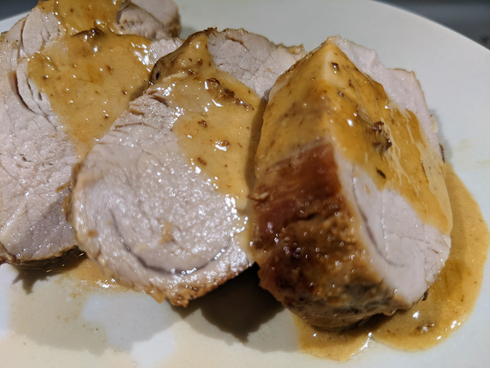

Basic Pork Tenderloin

Ingredients
Meat
2 pork tenderloin
4 tbsp store-bought rub
2 tbsp salt
Sauce
1 cup cooking cream
1 cup beef broth
Instructions
-
Sprinkle all sides of the 2 pork tenderloin with 4 tbsp store-bought rub and 2 tbsp salt.
-
Heat a stainless steel skillet on high heat.
Add some oil, and sear all sides of tenderloin about 2 minutes per side.
-
Transfer to the oven and bake for 25 minutes at 375F, or until the internal temperature of the pork reads 160F.
-
Make a pan sauce with 1 cup beef broth, then 1 cup cooking cream, then some cold butter.
-
Let the pork rest for 10 minutes before cutting.